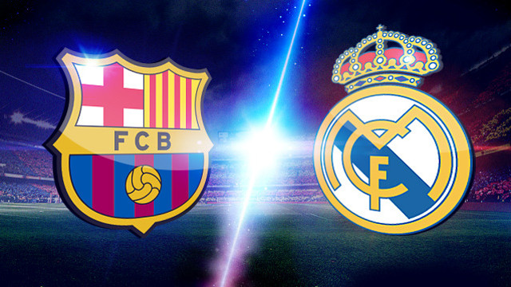

| Site Esporte.com | |||
| Principal | Futebol | Basquete | Vôlei |
Mesmo com vitória, Barça pode lamentar gols perdidos e desvantagem no confronto direto com o RealA vitória por 2 a 1 do Barcelona sobre do Real Madrid no clássico deste domingo colocou o clube catalão quatro pontos à frente do arquirrival na Liga Espanhola, mas o Barça ainda pode se arrepender por não ter aproveitado as chances no segundo tempo de conquistar a vantagem no confronto direto. Caso o Real consiga empatar o número de pontos com seu maior rival nos 10 jogos restantes da temporada - e no papel os próximos jogos do Real são mais fáceis - vai conquistar o título por conta da vitória de 3 a 1 sobre os catalães em outubro. O confronto direto é usado antes do saldo de gols como critério de desempate para o título, a exemplo da temporada 2006-2007, quando o Real foi campeão apesar de ter feito 12 gols a menos e levado sete a mais do que o Barcelona. |
|||
| Desenvolvido por Ecidir F. A. F. - 2015 | |||